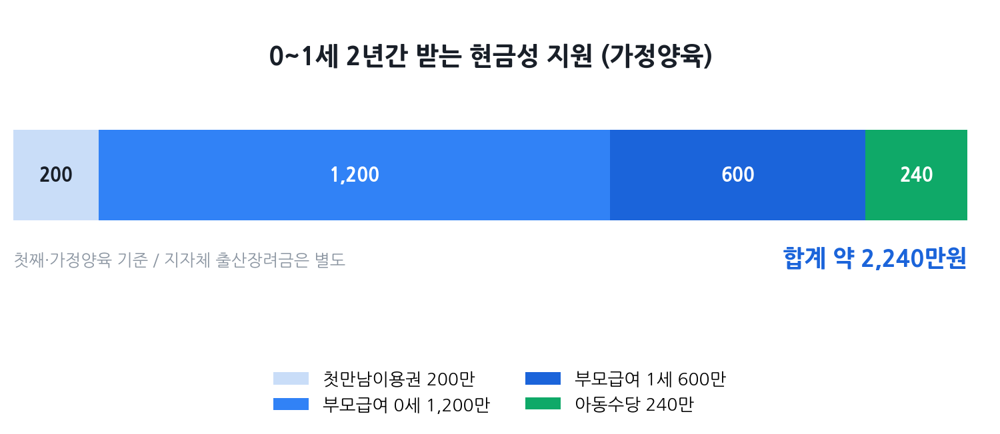

첫만남이용권·부모급여·아동수당
중복 수령 총정리 2026
신생아가 태어나면 국가에서 주는 돈이 세 가지 있습니다. 첫만남이용권(첫째 200만·둘째 300만), 부모급여(0세 월 100만), 아동수당(월 10만). 좋은 소식은 이 셋을 모두 중복으로 받을 수 있다는 것입니다. 0세 1년만 더해도 최소 1,520만 원(첫째 기준). 어디서, 언제, 어떻게 신청하면 하나도 안 빠지고 받을 수 있는지 지금 바로 알려드립니다.
- 최근 아이가 태어났거나 곧 출산 예정인 부모
- 세 가지 지원금을 동시에 다 받을 수 있는지 확신이 없는 분
- 신청 기한이 언제인지, 사용 기한이 어떻게 되는지 궁금한 분
- 지자체 출산장려금까지 합쳐서 총얼마인지 계산해 보고 싶은 분

세 가지 중복 수령 가능 여부 — 핵심 답변
결론부터. 첫만남이용권, 부모급여, 아동수당은 서로 중복 수령이 가능합니다. 세 제도는 각각 별도의 법령에 근거한 독립 급여이고, 소득·재산 기준이 없어 신생아가 태어난 모든 가정이 해당됩니다. 즉 셋 중 어느 하나를 받는다고 다른 것이 깎이거나 제한되지 않습니다.
첫만남이용권 — 첫째 200만·둘째 300만, 어디서 쓰나
첫만남이용권은 아이가 태어난 직후 국민행복카드 바우처로 일시에 지급되는 지원금입니다. 2024년 1월 1일 이후 출생아부터 적용되는 현행 기준은 다음과 같습니다.
| 출생 순서 | 지급액 | 지급 방식 |
|---|---|---|
| 첫째 | 200만 원 | 국민행복카드 바우처 일시 지급 |
| 둘째 이상 | 300만 원 | 국민행복카드 바우처 일시 지급 |
| 쌍둥이 | 500만 원 (첫째 200 + 둘째 300) | 동일 |
사용처 — 어디서 쓸 수 있나?
유흥업소·면세점·상품권 구매 등 일부 제한 업종을 제외한 전 업종(온라인 포함)에서 사용 가능합니다. 산후조리원, 병원(진료비·약제비), 대형마트, 온라인 쇼핑몰, 아동용품점 등 실질적으로 육아에 필요한 거의 모든 곳에서 쓸 수 있습니다.
- 사용 가능: 산후조리원, 병원, 약국, 대형마트, 편의점, 온라인몰, 아동복·용품 매장 등
- 사용 불가: 면세점, 유흥·사행업종, 상품권·선불카드 구매, 세금·공과금 납부
부모급여 — 0세 월 100만, 어린이집 보내면?
부모급여는 만 2세 미만의 아동을 양육하는 가정에 매달 현금으로 지급하는 급여입니다. 2026년 기준 금액은 다음과 같습니다.
| 아동 연령 | 월 지급액 | 지급 방식 |
|---|---|---|
| 만 0세 (0~11개월) | 월 100만 원 | 현금(매월 25일) |
| 만 1세 (12~23개월) | 월 50만 원 | 현금(매월 25일) |
소득·재산 기준이 없어 모든 가정이 받을 수 있으며, 아동 1인당 기준입니다. 쌍둥이라면 각각 별도로 지급됩니다.
어린이집에 보내면 어떻게 되나?
어린이집을 이용하면 부모급여 전액을 현금으로 받는 대신, 영유아 기본보육료가 어린이집에 직접 지원되고 그 차액만 현금으로 받는 구조입니다.
| 구분 | 만 0세 어린이집 이용 | 만 1세 어린이집 이용 |
|---|---|---|
| 부모급여 | 100만 원 | 50만 원 |
| 영유아 기본보육료(2026년) | 약 58만 4천 원 | 약 51만 5천 원 |
| 현금 수령액 | 약 41만 6천 원 | 거의 없음(차액 근소) |
아동수당 — 월 10만, 2026년 달라진 것
아동수당은 아이가 있는 가정에 매달 현금으로 지급하는 수당입니다. 2026년 4월부터 지급 대상 연령이 만 8세 미만에서 만 9세 미만으로 확대됐고, 이후 매년 1세씩 늘어나 2030년에는 만 13세 미만까지 받을 수 있게 됩니다.
| 항목 | 내용 |
|---|---|
| 지급 대상 | 만 9세 미만 아동 (2026년 4월 기준) |
| 기본 지급액 | 월 10만 원 (수도권 기준) |
| 비수도권·인구감소지역 | 월 10만 5천 원~11만 원 (현금 지급 기준) |
| 지역사랑상품권 선택 시 | 최대 월 13만 원 (인구감소지역 특별 지역) |
| 소득·재산 기준 | 없음 (보편 지급) |
| 지급일 | 매월 25일 |
중복 수령 합산표 — 시기별 총액 한눈에
세 가지를 모두 신청했을 때 실제로 받는 금액을 시기별로 정리했습니다. 아래는 첫째 자녀, 가정 양육(어린이집 미이용), 수도권 거주를 기준으로 한 수령 예시입니다.
| 시기 | 첫만남이용권 | 부모급여 | 아동수당 | 월 합산 |
|---|---|---|---|---|
| 출생 직후 | 200만 원 (일시) | 100만 원/월 | 10만 원/월 | 110만 원/월 + 200만 원 일시 |
| 만 0세 (0~11개월) | — | 100만 원/월 | 10만 원/월 | 110만 원/월 |
| 만 1세 (12~23개월) | — | 50만 원/월 | 10만 원/월 | 60만 원/월 |
| 만 2세~8세 | — | — | 10만 원/월 | 10만 원/월 |
가정 양육·수도권·첫째 기준. 어린이집 이용·지자체 추가금에 따라 달라질 수 있음.
지자체 출산장려금 추가로 얹기
위 세 가지는 전국 공통 지원이고, 거기에 거주 지자체가 별도로 주는 출산장려금이 더해집니다. 지역에 따라 수백만 원에서 수천만 원까지 차이가 크므로, 거주지 기준으로 꼭 확인해야 합니다.
| 지역 (예시) | 추가 지원 특징 |
|---|---|
| 서울 각 자치구 | 구별로 첫째 10만~200만 원, 둘째 이상 50만~200만 원 수준의 출산 축하금 지급. 구마다 큰 차이가 있음 (강남구 등 일부 구는 첫째 200만 원 지급) |
| 경기도 | 소득 관계없이 출생아당 산후조리비 50만 원(지역화폐) 지급. 화성·수원·고양 등 시·군 자체 추가 장려금 별도 (화성 첫째 약 300만 원~) |
| 인천광역시 | '1억 플러스 아이드림' 정책 — 만 1~7세 매년 120만 원, 총 840만 원의 천사지원금 별도 지급 |
| 인구감소지역·농어촌 | 일부 군 단위 지자체는 셋째 이상 출산 시 1,000만 원 이상 지원, 지역화폐·현금 병행. 거주 요건(전입 후 기간) 확인 필요 |
지자체 장려금은 지급 조건(전입 시점, 거주 기간, 출생아 순위 등)이 제각각이므로, 정부24 → 보조금24 또는 복지로에서 거주지 주소를 입력해 직접 조회하는 것이 가장 정확합니다.
신청 방법 — 행복출산 원스톱·정부24·복지로
세 가지 지원금은 각각 따로 신청해야 하지만, 행복출산 원스톱서비스를 활용하면 출생신고와 함께 한 번에 통합 신청할 수 있습니다.
행복출산 원스톱서비스 — 가장 빠른 방법
출생신고를 하는 읍면동 행정복지센터에서 또는 정부24(gov.kr)에서 출생신고와 함께 첫만남이용권, 부모급여, 아동수당을 한 번에 신청할 수 있습니다. 서류를 여러 번 낼 필요 없이 한 곳에서 처리됩니다.
| 신청 항목 | 신청 기한 | 소급 여부 | 신청 경로 |
|---|---|---|---|
| 첫만남이용권 | 출생일로부터 1년 이내 권장 | 출생 월부터 소급 | 행복출산 원스톱 / 복지로 / 읍면동 |
| 부모급여 | 출생 후 60일 이내 신청 시 소급 적용 | 60일 이내: 출생 월부터 소급 60일 초과: 신청일이 속한 달부터 |
행복출산 원스톱 / 복지로 / 정부24 |
| 아동수당 | 출생 후 60일 이내 권장 | 출생 월부터 소급 | 행복출산 원스톱 / 복지로 / 읍면동 |
온라인 신청 경로 요약
- 정부24(gov.kr) → 검색창에 '행복출산' 또는 '출산 관련 서비스 통합처리' 검색
- 복지로(bokjiro.go.kr) → 서비스 신청 → 복지급여 신청 → 부모급여/아동수당 개별 신청
- 읍면동 행정복지센터 방문 → 출생신고와 함께 모든 항목 통합 처리 가능
놓치면 손해 보는 4가지 함정
함정 1. 부모급여, 60일 넘기면 소급 안 된다
부모급여는 출생 후 60일 이내에 신청해야 출생 월부터 소급 지급됩니다. 60일을 넘기면 신청한 달부터만 받게 되어, 아이가 태어난 뒤 2개월 치(최대 200만 원)를 그냥 날릴 수 있습니다. 출생신고를 할 때 바로 함께 신청하는 것이 최선입니다.
함정 2. 첫만남이용권, 2년 안에 다 써야 한다
2024년생 이후 아이의 첫만남이용권은 출생일로부터 2년(24개월)이 사용 기한입니다. 기한이 지나면 잔액이 소멸됩니다. 200~300만 원이 큰 금액 같지만 바우처는 의외로 쓰기 까다롭습니다. 사용처 제한(면세점·상품권 불가)을 미리 숙지하고, 산후조리원·아기 용품·병원비 등에 집중적으로 사용하세요.
함정 3. 어린이집 보내면 부모급여 현금이 줄어든다
어린이집 이용 시 부모급여에서 영유아 기본보육료가 자동 차감됩니다. 만 1세는 보육료와 부모급여가 거의 같아 현금 수령이 거의 없습니다. 이 구조를 모르고 "부모급여를 못 받는다"고 오해하는 경우가 많습니다. 어린이집을 이용해도 지원은 유지되지만, 현금 수령액이 줄어드는 것뿐입니다.
함정 4. 지자체 장려금 신청을 따로 해야 한다
지자체 출산장려금은 행복출산 원스톱에 포함되지 않는 경우가 많습니다. 거주 구청이나 주민센터에 별도로 신청해야 하며, 신청 기한이 출생 후 3~6개월 이내인 경우도 있습니다. 출산 직후 거주지 주민센터에 연락하거나 복지로에서 지자체 급여를 별도 조회·신청하세요.
자주 묻는 질문
Q. 첫만남이용권·부모급여·아동수당을 동시에 다 받을 수 있나요?
네, 세 가지는 모두 중복 수령이 가능합니다. 별도의 소득·재산 기준도 없어 신생아가 태어난 모든 가정이 해당됩니다. 단 각 항목을 개별 신청해야 하고, 부모급여는 출생 후 60일 이내에 신청해야 소급 적용됩니다.
Q. 첫만남이용권 사용기한이 언제까지인가요?
2024년 1월 1일 이후 출생아부터는 출생일로부터 2년(24개월) 이내에 사용해야 합니다. 기한이 지나면 잔액은 자동 소멸됩니다. 국민행복카드 앱이나 카드사 앱에서 잔액과 만료일을 미리 확인해 두세요.
Q. 부모급여 신청을 늦게 하면 소급 적용이 되나요?
출생일로부터 60일 이내에 신청하면 출생 월부터 소급 지급됩니다. 60일을 넘기면 신청일이 속한 달부터 지급이 시작됩니다. 최대 2개월치(200만 원)를 놓칠 수 있으므로, 출생신고와 함께 바로 신청하는 것을 강력히 권장합니다.
Q. 어린이집에 보내면 부모급여를 못 받나요?
받지 못하는 것이 아니라 차액만 현금으로 받습니다. 만 0세 어린이집 이용 시 부모급여 100만 원에서 영유아 기본보육료(2026년 약 58만 4천 원)를 차감한 약 41만 6천 원이 현금 지급됩니다. 만 1세는 보육료와 부모급여가 비슷해 현금 수령이 거의 없습니다.
Q. 지자체 출산장려금은 어디서 확인하나요?
정부24 '행복출산 원스톱서비스' 또는 복지로에서 거주지 주소를 입력하면 받을 수 있는 지자체 추가 지원금을 한 번에 확인할 수 있습니다. 지역마다 금액 차이가 크므로 출생신고 전에 미리 조회해 두는 것이 좋습니다.
내 아이에게 해당하는 출산·육아 지원금, 한 번에 확인
첫만남이용권·부모급여·아동수당 외에도 놓친 지원금이 있을 수 있어요. 지자체 장려금까지 모두 매칭해 드립니다.
출산·육아 지원금 통합 진단 →본 글은 보건복지부·정부24·복지로·대한민국 정책브리핑 등 공공기관 공개 자료를 바탕으로 2026년 6월 7일 기준으로 작성됐습니다. 부모급여·아동수당 금액, 보육료 차감 기준, 지자체 지원 내용은 정책 변경에 따라 달라질 수 있으니 신청 전 반드시 복지로(bokjiro.go.kr), 정부24(gov.kr), 보건복지부(mohw.go.kr) 공식 채널에서 최신 기준을 확인하시기 바랍니다. 본 페이지는 정보 제공 목적이며 수급을 보장하지 않습니다.